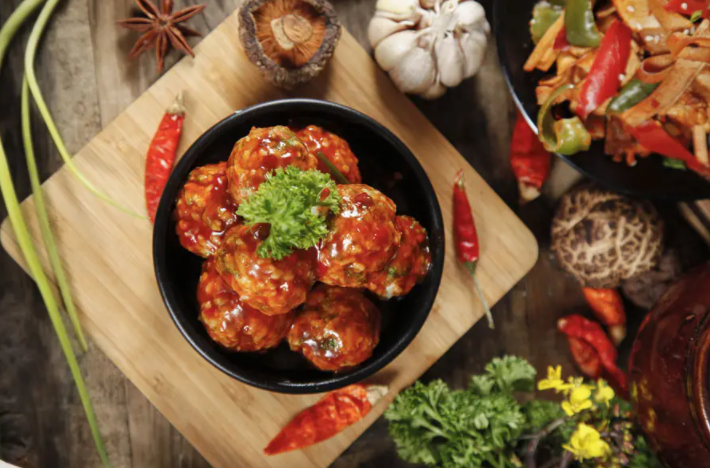
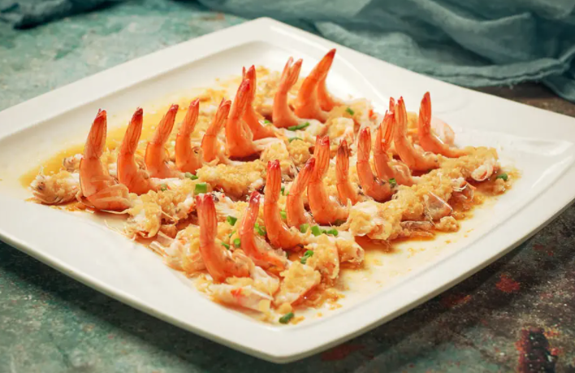
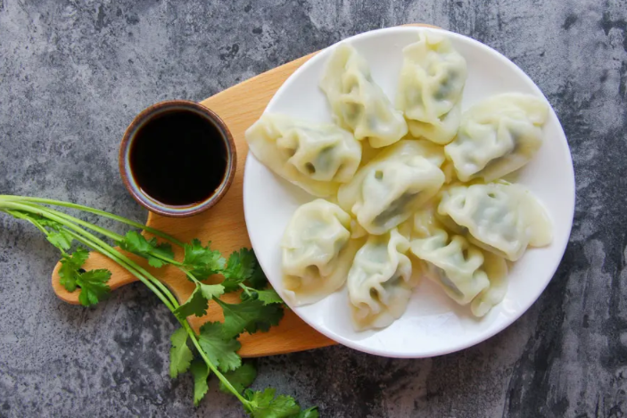
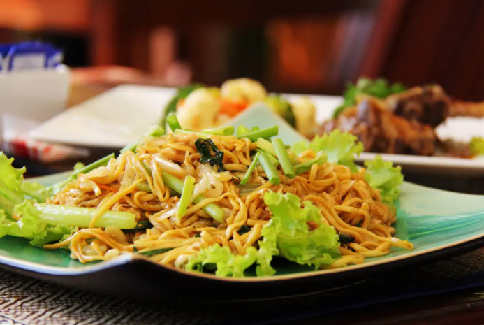

Braised pork balls in gravy are also known as “Chinese meatballs” (many of our clients call them this). If you like meatballs and spaghetti, you’ll probably appreciate Chinese meatballs as well. The super-smooth and flavory gravy is almost like a “drug sauce” keeping your taste buds wanting more and more. How many calories does it have? Trust me, you wouldn’t care at all!
Shrimp with vermicelli and garlic are definitely one of the must-orders of any dim sum meal! They are not only an expert choice in Guangzhou teahouses, morning tea restaurants, and street food night bazaars, but also a delicacy for many people's breakfasts in the rest of China’s middle-class restaurants.
Dumplings consist of minced meat and chopped vegetables wrapped in a thin dough skin. With a long history of more than 1,800 years, dumplings are a traditional food widely popular in North China.
Chow mein" is the Cantonese pronunciation of the Chinese characters above, which means stir-fried noodles. Generally speaking, this stir-fried dish consists of noodles, meat (usually chicken, beef, shrimp, or pork), onions and celery.
